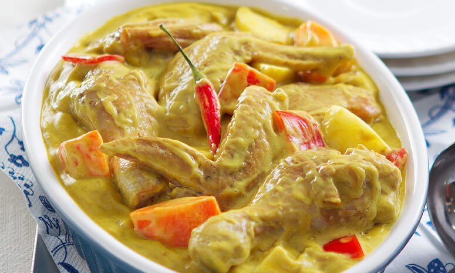
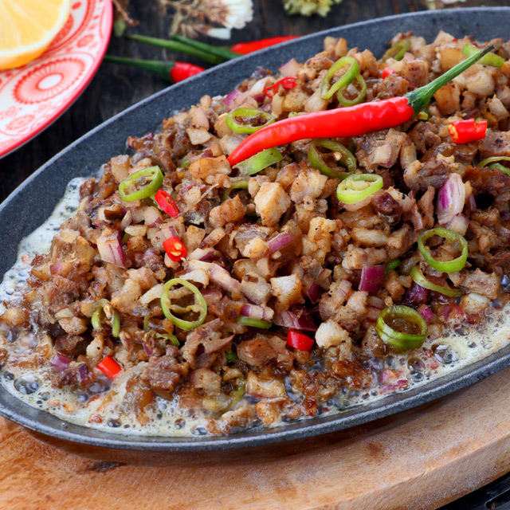

My Top 10 Favorite Foods
Sinigang

Sinigang is a Filipino soup or stew that has a sour and salty flavor. It's most commonly associated with tamarind, but it can also be made with other sour fruits and leaves. It is one of the most well-known Filipino dishes.
Adobo

Filipino adobo is a popular Filipino dish and cooking method that involves marinating meat, seafood, or vegetables in vinegar, soy sauce, garlic, bay leaves, and black peppercorns, browning in oil, and then simmering in the marinade.
Caldereta

Caldereta gets its name from the Spanish word caldera, which means cauldron. The dish was brought to the Philippines by the Spaniards during their 300-year colonization of the Philippines and is comparable to meat stews from the Iberian Peninsula.
Chicken Curry
Garlic, onion, and ginger are the ingredients in this dish. When the kitchen begins to smell good, you'll know it's done. Season the chicken with fish sauce and return it to the pan. After that, you can add the curry powder.
crispypata

Whole hog leg is cooked until soft, then deep-fried till golden and crisp for Crispy Pata. This traditional Filipino delicacy is sinfully wonderful, crunchy on the outside and moist on the inside.
Lumpia
Lumpiang Shanghai alludes to the Chinese origins of lumpia, which was initially brought to the Philippines by Chinese traders in the ninth century. Lumpia-like rolls are manufactured all over Asia; in China, they're fried and called spring rolls.
Sisig
the crunchiness of the pig ear cartilage with the creaminess of the liver and brains came to define a well-prepared plate of sisig. Aling Lucing's creation catapulted the humble dish from a regional delicacy to a national sensation. Aling Lucing's sisig also revolutionized the Kapampangan dining culture.
pancitmolo
The word pancit molo is derived from the well-known Filipino town of Molo. Wontons were first introduced in the seaport village, giving the soup a Chinese flavor. As a garnish, Spanish fried garlic was used, while Filipino fish sauce brought roundness and umami..
FriedChicken

Fried chicken's origins in the southern United States can be traced back to Scottish and West African cuisines. Scottish fried chicken was unseasoned and cooked in oil, whereas West African fried chicken was seasoned.
tinola

Tinola is a traditional Filipino cuisine that dates back to the 1800s. It is even mentioned in Chapter 3 of Jose Rizal's novel Noli Me Tangere, where Capitan Tiago orders the dish after missing it for a long time during his protracted stay in Europe.